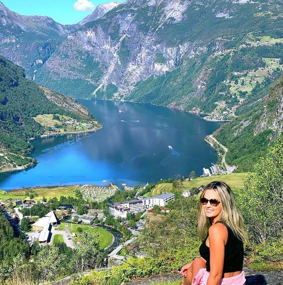
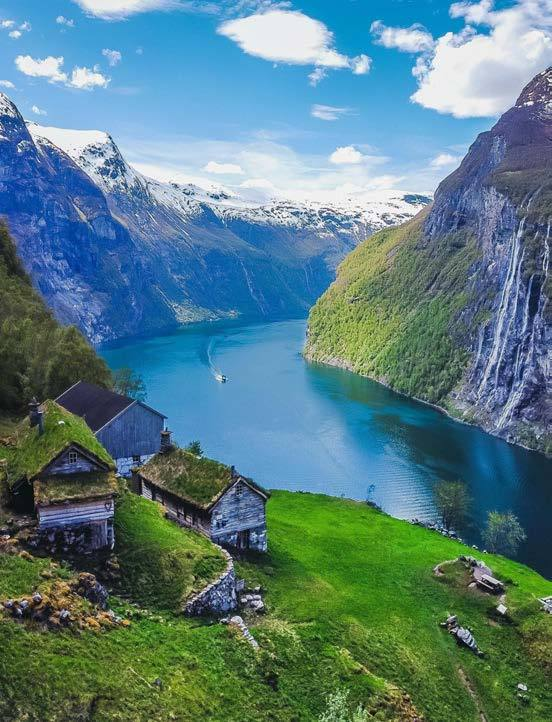

紫色掣＝遊客實拍圖庫，先睇真相再決定。
全員著住連身防水衣＋風鏡 — 出發前喺船屋前影嘅團體照，係難得嘅團體照機會。快艇會埋到瀑布腳，浪花直接打埋嚟。
⏰ 觸發訊號：著好衫未上艇嗰陣＝團體照時機（上咗艇冇得企）。注意：手機防水/掛繩，唔穩陣就交畀導遊袋。
明信片御用崖石：企/坐喺伸出嘅大石上，成條峽灣做背景。之前想行上嚟嗰個位，而家坐車直達。
⏰ 觸發訊號：巴士第一個停點就係。注意：崖石位要排隊 — 落車直去石位先影，風景位後補；石面濕滑坐低影最穩。歐洲最高峽灣景觀台之一：企喺玻璃圍欄邊，500米自由落體視角直望村＋成條峽灣＋Blåbreen冰川。
⏰ 觸發訊號：巴士一路爬升過雪線＝就快到。注意：1500米凍過村~10度＋勁風 — 褸著定先落車；相排欄杆正中位。
出峽灣方向七姊妹喺右手邊、求婚者瀑布正對面；崖上掛住百年前嘅農場（Skageflå等）— 語音導覽會逐個介紹。
⏰ 觸發訊號：開船即上甲板霸右邊欄杆位，頭45分鐘係精華，之後先休息。注意：甲板風大，帽同帽衫繩綁好。由市中心公園起步 418 級樓梯直上，成個 Art Nouveau 童話小鎮＋群島＋大西洋一眼睇晒 — National Geographic 認證嘅「歐洲最靚海岸小鎮」。
⏰ 觸發訊號：白夜金光 21:00–22:30 — 食完飯先上啱啱好。注意：418級係樓梯唔係山路，慢行20分鐘；詳細 go/no-go 睇「今晚」tab。白夜照舊唔會黑 · 金光 21:00–22:30
碼頭 → Airbnb Øwregata 11
Aksla 觀景台一帶（樓梯由市中心公園起步）